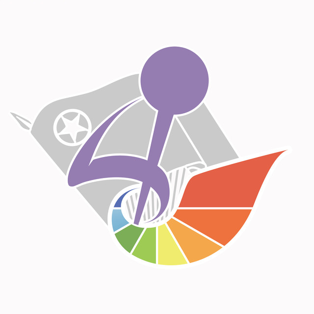

热爱，是慢慢长出来的。
学医的起点来自家人期许，他的热爱，是在日复一日的临床实践中慢慢形成。作为国内微创外科先行者，他深耕胃肠肿瘤腹腔镜技术，执笔编写国家级手术指南；援滇义诊之时，手术刀解除病痛，亦藏着体恤患者的脉脉温情。在无数台手术里，他读懂：行医是担当，亦是福报。
带着一个问题来听 ＋
如果理想并不是起点自带的答案，那么它是怎样在日复一日的临床淬炼中被发现、被确认？让我们期待臧老师的思考与分享。
故事来源 · 署名文章 ↗
上海交通大学医学院01 / 医路故事
热爱未必生来明晰。
它在一次次学习、相遇与实践中，慢慢有了形状。
学医的起点来自家人期许，他的热爱，是在日复一日的临床实践中慢慢形成。作为国内微创外科先行者，他深耕胃肠肿瘤腹腔镜技术，执笔编写国家级手术指南；援滇义诊之时，手术刀解除病痛，亦藏着体恤患者的脉脉温情。在无数台手术里，他读懂：行医是担当，亦是福报。
如果理想并不是起点自带的答案，那么它是怎样在日复一日的临床淬炼中被发现、被确认？让我们期待臧老师的思考与分享。
故事来源 · 署名文章 ↗曾经有一位花季女孩，被难治的炎症性肠病反复折磨。一次次会诊、一轮轮方案调整，女孩在病痛里挣扎、渴望重回课堂，这让杜鹏揪心不已。他意识到，这类被称作 “绿色癌症” 的疾病，还有太多困境等待突破。自此，他一头扎进炎症性肠病外科这片难啃的领域，创新术式、搭建 “玫瑰园之家” 患者社群，既以手术刀托举希望，也用心守护这群年轻患者的信心。他常提醒青年学子：学医不只是学会手术技艺，更要读懂病痛背后鲜活的人生。
一个患者的故事如何锚定一生的研究方向？医者除了治病，还能为患者带去怎样的力量？让我们带着疑问静待杜老师的娓娓讲述。
故事来源 · 医院报道 ↗初入骨科临床，直面创伤画面的他也曾心生畏怯。他没有盲从世俗眼中“最好”的赛道，而是遵从内心兴趣，一头扎进少有人深耕的冷门科研方向。于显微修复重建的方寸之间打磨技术，行走边疆基层开展义诊帮扶，他始终谨记医者本分：努力让经受病痛的患者先展露笑颜。
面对陌生领域的畏惧，如何不随波逐流，找到属于自己的深耕之地？不妨带着这份思考，聆听郑老师的从医故事。
延伸阅读 · 医学院报道 ↗小团手绘风漫画为故事意象插画，非嘉宾肖像或现场实录。
02 / 相约校园
一场关于选择、坚守与成长的对话。
把前辈的经历，带回自己的医路。
医学从不是一场一眼定终局的奔赴。有人在临床实践中逐渐认定方向，有人因一次医患相逢找到长久求索的课题，也有人在日复一日的磨炼中，加深对职业责任的理解。
本次活动邀请臧潞、杜鹏、郑宪友三位医务工匠走进校园，分享医路上的选择与坚守。我们将从从医初心出发，走进他们面对考验、精进技艺、回应时代变化的经历，也把话题带回青年学子的学习、科研与职业探索。
瑞金医院
臧潞，上海交通大学医学院附属瑞金医院普外科副主任、外科教研室副主任，主任医师、教授、博士生导师，2026年“上海医务工匠”。长期从事以微创手术为主的胃肠肿瘤综合治疗，组织并执笔完成腹腔镜胃癌手术指南及相关专家共识；注重临床研究与医学教育，在精准诊疗和青年医师培养中持续精进。
资料来源 · 瑞金医院发布（2026.08）↗新华医院
杜鹏，上海交通大学医学院附属新华医院副院长、结直肠肛门外科学科带头人，主任医师、教授、博士生导师，“上海医务工匠”。主攻结直肠肿瘤、炎症性肠病的外科诊治，擅长微创保肛手术；聚焦肠道炎症免疫机制开展前沿科研，兼顾临床救治、科学研究与医学育人，以精益求精的工匠之心践行医者使命。
资料来源 · 新华医院（2026.08）↗第六人民医院
郑宪友，上海交通大学医学院附属第六人民医院副院长，主任医师、教授、博士生导师，上海市优秀学术带头人。长期从事复杂肢体损伤的显微修复重建，围绕神经损伤修复与功能重建、难愈合创面修复等方向开展研究；重视临床与科研结合，引导青年从基础实验和临床观察出发，逐步建立问题意识与独立判断能力。
资料来源 · 第六人民医院（2026.04）↗我们将聊些什么
从最初的选择谈起，看兴趣如何在学习、临床与师长的影响下逐渐清晰，让一份选择成为内心认同的志业。
当理想遇上困难与变化，如何判断什么值得继续、什么需要调整，在真实经历中认识自己。
从技术细节到患者的长远生活，理解医者的责任，也听老师谈什么才算真正“做好了”。
面对人工智能等新工具，如何更新知识与方法，同时认真承担对具体患者的判断与责任。
把前辈的经历带回日常，在观察、尝试与请教中认定方向，建立更长远的成长尺度。
赴一场医路之约
报名请关注班级群内理论学习发布信息。
03 / 回顾与寄语
把当晚的故事、回答与嘱托留在这里。
需要启发时，随时回来听听、读读。
活动结束后，将陆续补充现场纪要与三位嘉宾的故事回顾。
寄语与录音
录音与文字稿确认后，将在这里同步发布。
老师的语音寄语正在准备中。
经老师确认的寄语文字稿将在这里同步更新。

愿每一次选择，都有仁心引路；
愿每一步前行，都有匠心相伴。